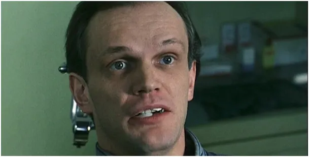
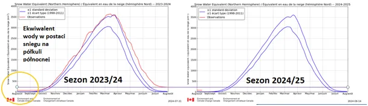
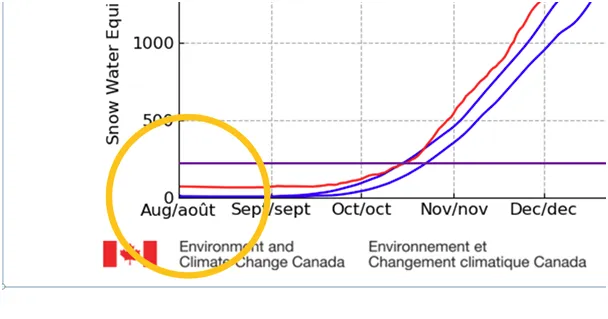
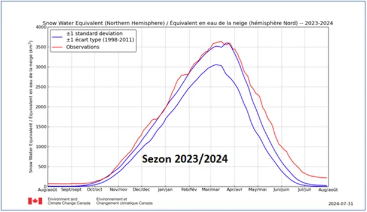
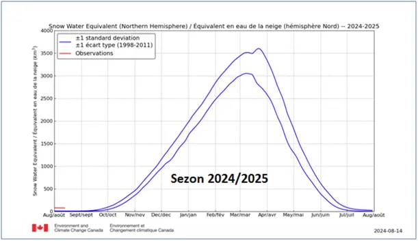
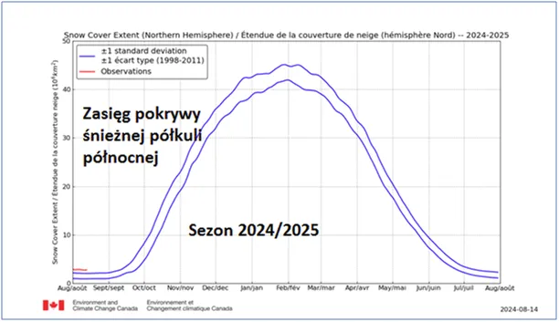

Cud znikającego śniegu.
Znikło? Zniknęło?

15.08.2024
Dziś materiał pokazujący rażące manipulowanie globalnymi danymi meteorologicznymi. Jednej nocy w raportach Światowej Organizacji Meteorologicznej znika z Arktyki 160 miliardów ton śniegu, który przynajmniej od kilku lat kumuluje się i tworzy nowe obszary wiecznej zmarzliny wędrującej na południe. Materiał jest unikalny i będzie tylko na mojej bezpiecznej, szyfrowanej stronie. Zapraszam do krótkiej lektury.
Rok meteorologiczny zaczyna się 1 sierpnia i z tej okazji wykresy sezonowe rozpoczynają swoją drogę w nieznane od strony lewej, aby za rok osiągnąć kres po stronie prawej.

30 lipca 2024 było w Arktyce około 240 km^3 (kilometrów sześciennych) wody pod postacią śniegu a już 1 sierpnia rano 3 razy mniej. 1 km^3 to kostka zawierająca 10^9 (miliardów) ton wody, czyli zniknęło/znikło ok. 160*10^9 (160 miliardów ton śniegu).



Według autorów monitoringu nie zmienił się jednak zasięg tej pokrywy, co znaczy, że te 160 miliardów ton w nocy ktoś zeskrobał/zepchnął (do morza?)/zlizał ? Jak to w cudach, metoda zostanie zagadką. Rok temu było identycznie, nie wiem jak w latach poprzednich. Tu link do raportu: https://pawelklimczewski.pl/2023/08/09/opn-czyli-odwieczne-prawo-natury/

Jeśli rok temu było identycznie, to oznacza to, że cała czerwona linia w rzeczywistości, co roku przebiega wyżej o te 160 mld ton.
Nie planuję pisać do autorów tego raportu, nie płoszmy króliczka.
Obraz wyróżniający: "Oszust z asem karo", Georges de La Tour, ok. 1635-1640, olej na płótnie.
Paweł Klimczewski